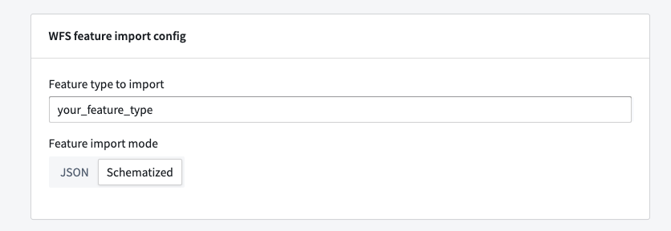

Connect Foundry to a WFS â version 1.1.0 server and pull geospatial data into a Foundry dataset.
Learn more about setting up a connector in Foundry.
On the Connection details page, enter the Upstream host URL in the WFS Source Config panel to connect to a single WFS server.
The WFS connector currently supports two types of authorization configuration: No Auth and GEOAxIS. If you select GEOAxIS, then you must also upload any non-person entity (NPE) certificates and private keys required to connect to the server. To upload NPE certificates or private keys, select More Options before choosing Configure server certificates for NPE certificates or Configure client certificates for private keys.
The More options menu provides two additional configuration options:
You must access your WFS server on port 443. Ensure an egress policy exists for the source.
After you configure your source, select Preview sources on the right side of your screen to view the names of feature layers available on the WFS server.
After you create your source, you can create syncs that import data for a specific feature type into Foundry. You will need to specify the name of the feature to import in the WFS feature import config.
By default, the WFS connector creates a dataset with two columns: one for the feature ID and one for a JSON string of the properties on that feature. You can optionally configure the connector to parse the schema definition from the WFS server to create a dataset with a typed column for each property on the feature type. To do this, change the Feature import mode from JSON to Schematized.

:::callout{theme="neutral"} The Schematized import mode may result in longer build times for feature types with many properties or more failure-prone builds in cases where WFS servers have a non-standard schema definition. :::
The More options menu provides two additional configuration options:
The WFS connector may fail as a result of the following restrictions on the server's 1.1.0 specification:
1.1.0 specification, then the WFS connector cannot query features correctly. The connector uses GetFeature requests to respond with the number of features fetched, but some servers will always respond with 0. In this case, the connector cannot determine how much data to fetch and will exit.1.1.0 does not provide a mechanism to page through feature data, so the connector will try to page through it in batches. If there is more data in one small region than can fit in a single batch, the connector cannot import that data and the sync will fail. By default, the smallest region possible is a single 10-kilometer by 10-kilometer area. Although this is not configurable, the default batch size is configurable at the sync level.